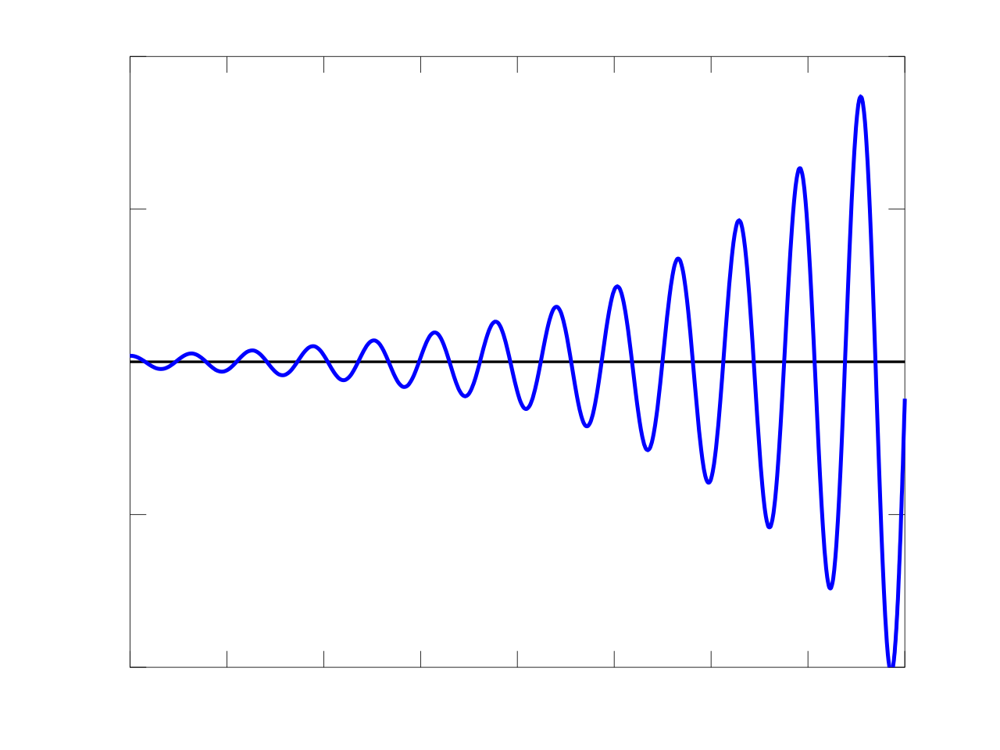

Is everything a function?
Why some cookies taste better, why optimization shows up everywhere, and why curiosity might be the most useful variable.

I have wanted to write a blog for a long time, but I kept running into the classic paradox: what do I even write about? Then it hit me. Why not start with a strange idea I mapped recently? This is a collection of partially formed thoughts, colliding into something fun. There is no grand conclusion, just a small theoretical trail that is worth following to the end.
Let us begin with a bold claim: everything is a function. Even in chaos and randomness, patterns exist. If you are not familiar with functions, do not worry. In simple terms, a function takes an input and gives an output. It can be as simple as f(x) = 2x or f(x) = x². Some points give the function a minimum value, and some give it a maximum value. Functions are not limited to one or two dimensions either. No matter how many dimensions they exist in, we can still talk about higher, lower, better, worse, maximum, minimum, or optimal values.
Without diving too deeply into the math of how we find those values, the real question is: why should anyone care about functions? The answer is simple. Because we are always trying to maximize or minimize something. Maybe you want to maximize the money you save every month while minimizing the number of free trials that quietly turn into surprise subscription fees.
Let us understand this through a cookie. Specifically, a chocolate chip cookie. To bake one, you need ingredients like flour, butter, eggs, chocolate chips, sugar, baking powder, salt, vanilla extract, and maybe some cashew nuts. If you follow a recipe, or if you are already good at baking, you get a cookie. It might be great, terrible, or somewhere in between. The important question is: will anyone accept the cookie?
This is exactly like a function. Making a tasty chocolate chip cookie is a function of using the right ingredients, in the right amounts, in the right order. So, is it possible to guarantee a perfect cookie every time? That is the same as asking whether we can find the right variables, in the right magnitude, in the right order, to get the output we want from a function.
Mathematically speaking, we can search for the Everest peak or Mariana Trench of a function, or any optimal value we care about, even though things become complicated in higher dimensions. Theoretically, it is possible.
You might say, "But we live practically. I am just trying to find the optimal route to the fridge without stepping on a Lego. Let us talk about functions when they help me predict whether the Tupperware in the back contains delicious leftovers or just sewing supplies."
That gives rise to a new question: is prediction even possible? And if it is, how accurate can we be? This also connects to whether we have full control over our actions and their results. The answer is yes, mostly. Life is complicated, but that does not mean it has no patterns.
Consider happiness. Happiness can depend on variables like economic stability, health, relationships, purpose, hobbies, current environment, social norms, and random life events, such as suddenly stepping barefoot on a Lego brick.
Some variables are in your control, like hobbies. Others are not, such as unexpected events, social norms, economic conditions, or your current environment. You cannot control every random misfortune, just like you cannot always control whether you have the perfect ingredients for cookies.
So what do we do? We optimize what we can control. If you sort the factors by impact, maybe relationships come first, then health, then purpose. You can then focus on the most important variables to improve the overall function. Some factors have a huge impact, while others barely move the needle. If you slightly mess up the baking powder, the cookie might survive. But forget the chocolate chips, and now we have a serious problem.
This applies to many functions: health(physical_state, mental_wellbeing, lifestyle_factors), decision_making(options, potential_risks, desired_outcome), confidence(situation, perceived_challenge, past_experiences). The math works the same way for everybody. It all comes down to how well you can design, understand, and control your function.
Everything so far was just the pre-build for what comes next. Now that we understand functions and their real-life applications, let us see where the idea can go.
Some functions are functions of other functions. Let us call them super functions. For example, a success function might include happiness(), decision_making(), health(), and many other smaller functions. We can keep nesting functions inside each other almost endlessly.
That means there could be a super-super function that represents every possible function in an individual's life: life_function(success(decision_making(...), metrics, timeframe, unexpected_consequences), overall_happiness, relationships, health(...), purpose, resources, environment, adaptability, learning_and_growth, ...). You get the point.
Hold onto that thought. We will come back to it soon.
Before going further, here is something that sounds bizarre: there exists a way to approximately learn outputs for functions across input combinations, even when the function has many dimensions. We do this with machine learning, more precisely with neural networks. The technical details are outside the scope of this blog, but the idea is simple: if you have enough input-output data, a model can learn the pattern. Even if you do not know the exact function, the neural network can approximate it. Then, you can give it new inputs and predict the output.
You might see where this is going: learning the life_function().
The problem is that we do not have all the inputs and outputs for real life. Life is messy. Predictions are difficult. Anything can happen. You might be busy baking cookies instead of attending a networking event that seemed pointless, only to later realize you missed a chance to pitch your startup to an investor. The butterfly effect is real.
But if we ignore the chaos for a moment and imagine that we had all the data, could we predict the perfect path? Could we answer questions like: how do I make better decisions? How do I become successful? How do I find my life's purpose?
Is it possible to create such a machine? Maybe not completely. We may never fully build a life-function machine, but we can see a smaller version of it in how the brain works. Neural networks were inspired by the brain in the first place.
A good example is a professor who has seen thousands of students with different behaviors, learning styles, and abilities. Over the years, the professor develops a deep understanding of patterns. After a few conversations, they can often recognize what type of student they are talking to and offer advice that might completely change that student's path.
Mathematically, this is close to what we are searching for. Without having a perfect function, we still move toward a more optimized version of it. In plain English, we call this experience.
But what is experience? How does it arrive? Is large data the answer to everything?
This leads to another strange question: is everything just a huge pile of data interacting with other data and creating more data? That sounds a little like entropy. If it is true, then maybe creativity is not magic, but recycled information processed into a new form by the brain. Is that really true? That is a blog post for another day.
Computers are fast at calculations, but artificial intelligence systems need huge data centers, massive electricity, and a ridiculous amount of computing power. Meanwhile, your brain can run on a few chocolate chip cookies, warm milk, and a good night's sleep.
Still, we should not ignore one big factor. Computers, in their modern form, have only existed for a few decades, with early concepts dating back to the nineteenth century. Nature, meanwhile, has been evolving the human brain for millions of years.
So here is the big question: can evolution's creation be surpassed by its own creation? Will artificial intelligence ever beat the naturally intelligent brain in every aspect? Or will AI keep asking for more data while we sit back and enjoy our chocolate chip cookies?